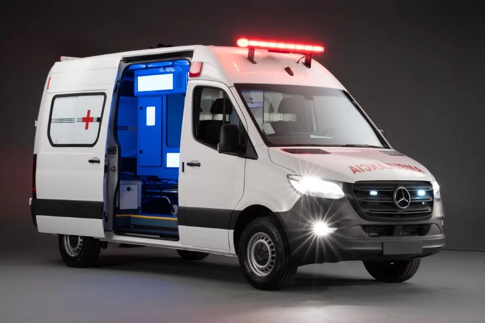

Atendimento Imediato 24h
Remoção especializada com total discrição, segurança e profissionalismo.
Serviço de remoção especializada disponível 24 horas por dia, 7 dias por semana
Transporte em ambulância equipada ou carro descaracterizado conforme necessidade

Internações voluntárias e involuntárias com profissionalismo e discrição
Internação Voluntária
Para indivíduos que reconhecem a necessidade de ajuda. Atendimento respeitoso e sem constrangimentos.
Internação Involuntária
Para situações que requerem remoção especializada. Realizado conforme protocolos legais e éticos.
Equipe de Profissionais
Especialistas treinados em primeiros socorros, psicologia e abordagem respeitosa de situações delicadas.
Múltiplas Unidades
Presença em toda a região metropolitana garantindo resposta rápida e eficiente em qualquer situação.
Por que Escolher BRIZZIO?
- Discrição Total: Confidencialidade absoluta em todas as operações
- Disponibilidade 24/7: Sempre ready para atender chamados em qualquer hora
- Equipe Treinada: Profissionais com experiência em situações delicadas
- Procedimentos Legais: Conformidade com todas as leis e regulamentações
- Transporte Seguro: Ambulância equipada ou carro descaracterizado
- Suporte Contínuo: Apoio à família durante todo o processo
Como Funciona
Entendemos que situações de remoção são delicadas. Aqui está nosso processo:
- Avaliação: Discussão detalhada com você sobre a situação
- Planejamento: Estratégia personalizada de abordagem
- Execução: Remoção profissional com respeito e segurança
- Transporte: Deslocamento seguro e discreto
- Acompanhamento: Suporte contínuo após a remoção